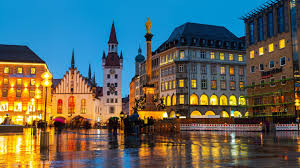

Have you ever thought about visiting Germany?

Germany is one of the most beautiful and developed countries in Europe.
Firstly, you can visit Germany as a tourist and explore amazing cities:
Berlin
1. Historical landmarks
Berlin has many famous places
like the Berlin Wall,
Brandenburg Gate, and museums.
2. Modern lifestyle
The city combines history
with modern technology and culture.
3. International atmosphere
Berlin is full of people
from different countries and cultures.

Munich
1. Beautiful architecture
Munich is famous for its old buildings,
castles, and traditional German style.
2. Nature and parks
The city has many green parks
and wonderful natural views.
3. German traditions
Visitors can enjoy German food,
festivals, and local traditions.
Secondly, you can study in Germany and enjoy an excellent educational experience:

Studying
1. Strong universities
Germany has many respected universities
with high-quality education.
2. Affordable education
Many universities in Germany
offer low-cost or free education.
3. Great opportunities
Students can improve their language,
skills, and future career opportunities.
Finally, you can work in Germany and build your future career:

Working
1. Strong economy
Germany has one of the strongest economies
in Europe with many job opportunities.
2. Professional environment
German companies are known
for organization and teamwork.
3. Career development
Working in Germany helps people
gain international experience and skills.